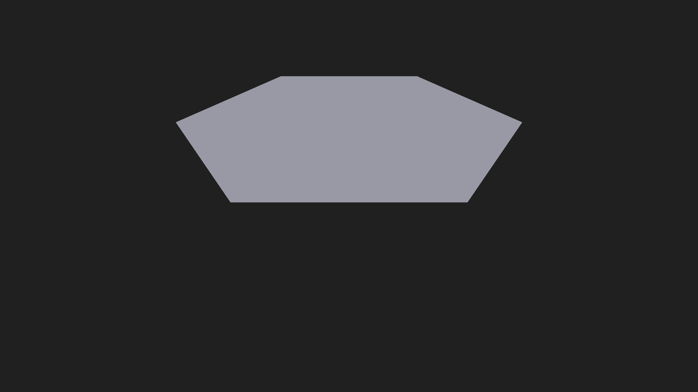

Both images: the SAME view (oblique φ=0.55 rad, r=3.0), the SAME rigid +0.5 m presentation lift off the engine floor, the SAME render mode (fill+wireframe) and lighting — captured from the isolated demo instance, each upload corroborated byte-for-byte against the engine's persisted snapshot. They differ ONLY in the accepted physical state of the frozen B2 fixture. Numerical gates: ALL PASS. DYAD (qwen3.8-27b-nvfp4-mtp): judged the flat state consistent in every round but could not visually resolve the bump — the height comparison is recorded INCONCLUSIVE; the wireframe pass draws the same colour as the fill and the lighting produces no shading gradient across the bump, so the interior carries no cue. Your acceptance is not claimed or assumed — this pair is presented for that review.
cc62542f…aa87cef; PNG sha256 f7a6e595…75702.
docs/evidence/membrane_window_demo/20260908T192702.077867Z/raised_gamma0_oblique.png

a25d27e5…7001f8e; PNG sha256 39b861a8…e30fa9.
docs/evidence/membrane_window_demo/20260908T192708.250952Z/relaxed_gamma1_oblique.png
Verdict classes kept separate — numerical CPU: PASS · upload: CONDITIONAL with position-byte
corroboration MATCH · window: EXECUTED (isolated instance) · DYAD: floor artifact RESOLVED
(controlled evidence), centre-height comparison INCONCLUSIVE · human: NOT CLAIMED (this page) ·
GPU-driven dynamics: NO CLAIM. Task record: docs/THE_MEMBRANE_DYAD02_RECORD.md.